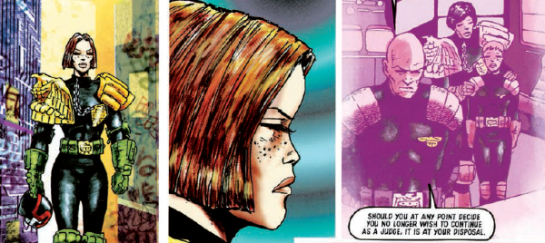

Judge Galen DeMarco worked the isolated sector 301 (aka The Pit) when she first met Dredd. Never happy with the rules that forbid Judges to have sexual relationships, she eventually left the Justice Department to become a private investigator (as DeMarco P.I.).
Art by Carlos Ezquerra
| Story Title | Parts | Pages | w indicates a wraparound coverCovers | Year(s) | Issues | Writer | Artist | Colourist | Letterer |
|---|---|---|---|---|---|---|---|---|---|
From Judge DreddThe Pit | 14 | 86 | 970: Carlos Ezquerra 974: Cliff Robinson 978: Colin MacNeil 3 | 1995-1996 | 970-983 | John Wagner | Carlos Ezquerra: 1‑8 Colin MacNeil: 9‑11 Lee Sullivan: 12‑14 various | Alan Craddock: 9‑11 Mike Hadley: 12‑14 various | Tom Frame |
From Judge Dredd | The PitUnjudicial Liaisons | 3 | 19 | 987: Mark Harrison 1 | 1996 | 987-989 | John Wagner | Carlos Ezquerra | <-- | Tom Frame: 1‑2 Ellie De Ville: 3 various |
From Judge Dredd | The PitDeclaration of War | 1 | 6 | 0 | 1996 | 991 | John Wagner | Lee Sullivan | Alan Craddock | Tom Frame |
From Judge Dredd | The PitBongo War | 8 | 56 | 994: Simon Davis 999: Sean Phillips 2 | 1996 | 992-999 | John Wagner | Lee Sullivan: 1, 8 Alex Ronald: 2‑4 Carlos Ezquerra: 5‑7 various | Alan Craddock: 1‑4, 8 various | Tom Frame |
From Judge DreddFog on the Eerie | 4 | 24 | 1038: Simon Davis 1 | 1997 | 1037-1040 | John Wagner | Calum Alexander Watt | <-- | Tom Frame |
From Judge DreddDance of the Spider Queen | 4 | 24 | 1043: Dermot Power 1 | 1997 | 1041-1044 | John Wagner | Henry Flint | <-- | Tom Frame |
From Judge DreddMissing | 6 | 36 | 1079: Jason Brashill 1 | 1998 | 1078-1083 | John Wagner | Lee Sullivan | Alan Craddock | Tom Frame |
From Judge DreddBeyond the Call of Duty | 10 | 72 | 1101: Mark Harrison 1104: Jason Brashill 1107: Dermot Power 1109: Jim Murray 4 | 1998 | 1101-1110 | John Wagner | Carlos Ezquerra | <-- | Tom Frame |
From Judge DreddThe Scorpion Dance | 8 | 48 | 1125: Simon Davis 1129: Jason Brashill 2 | 1998-1999 | 1125-1132 | John Wagner | John Burns | <-- | Tom Frame |
| Posters | |||||||||
Reprint of prog 987's cover.Judge DeMarco - Babescan | 1 | 2 | 0 | 1996 | SFS19 | n/a | Mark Harrison | <-- | n/a |
| year | episodes | pages |
| 1987 | 0 | 0 |
| 1988 | 0 | 0 |
| 1989 | 0 | 0 |
| 1990 | 0 | 0 |
| 1991 | 0 | 0 |
| 1992 | 0 | 0 |
| 1993 | 0 | 0 |
| 1994 | 0 | 0 |
| 1995 | 3 | 19 |
| 1996 | 23 | 148 |
| 1997 | 8 | 48 |
| 1998 | 17 | 114 |
| 1999 | 7 | 42 |
| 2000 | 0 | 0 |
| 2001 | 0 | 0 |
| 2002 | 0 | 0 |
| 2003 | 0 | 0 |
| 2004 | 0 | 0 |
| 2005 | 0 | 0 |
| 2006 | 0 | 0 |
| 2007 | 0 | 0 |
Comic strip data (excludes other content):